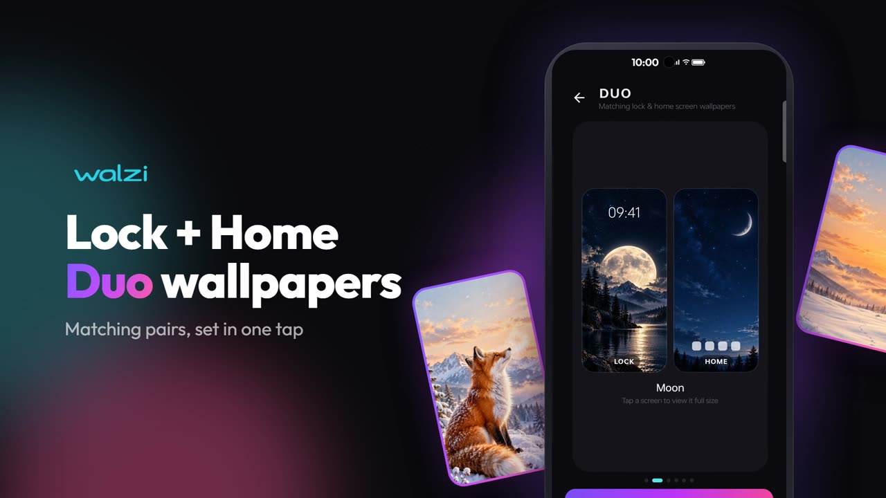

Hanuman Puja Vidhi at Home on Tuesday & Saturday
A simple step-by-step puja with samagri list, mantras, Chalisa, Bajrang Baan and Aarti.
Read articleRecover deleted notifications, find the perfect wallpaper, and bring daily devotion into your life — simple guides from the team behind our apps.

⭐ Latest · WalziDuo wallpapers continue the story from your lock screen to your home screen. Here's how to set them up manually — or in one tap with Walzi.
Read Full Article → Hanuman Dham
Hanuman DhamA simple step-by-step puja with samagri list, mantras, Chalisa, Bajrang Baan and Aarti.
Read article NotiVault
NotiVaultHow notification history lets you read “This message was deleted” messages — and its limits.
Read article NotiVault
NotiVaultAndroid's built-in notification history vs NotiVault — step-by-step guide to getting alerts back.
Read article Walzi
WalziA 7-point checklist for choosing a wallpaper app — quality, previews, data use and privacy.
Read article Hanuman Dham
Hanuman DhamWhat devotees experience from a daily path, the best time to recite and a simple path vidhi.
Read article NotiVault
NotiVaultWhy NotiVault is the simplest way to save notification history and never miss an OTP again.
Read articleNo articles match your search. Try "notification", "wallpaper" or "Hanuman".
Walzi, NotiVault and Hanuman Dham — all free on Google Play Store.